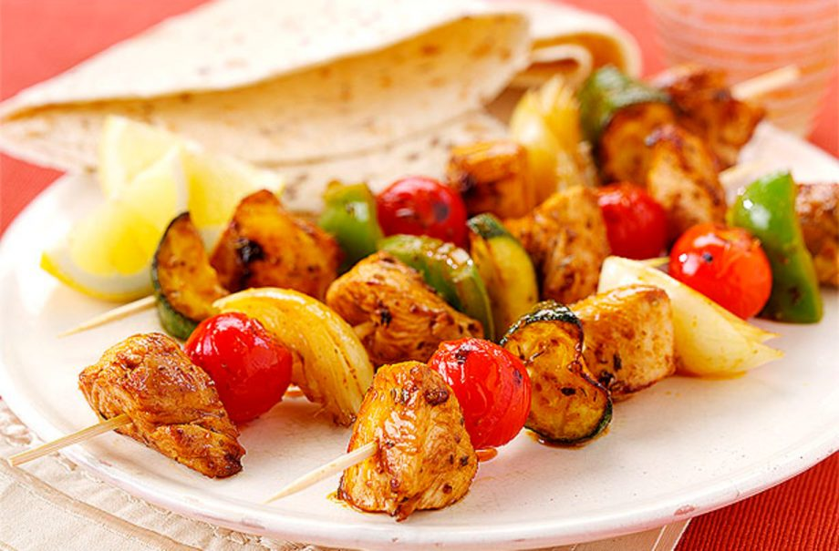

Mediterranean turkey kebabs recipe

Serves:
Cost:
Cooking:
Skill:
4
Cheap
8-10 Min
Easy
No barbecue is complete without some trusty kebabs – try these Mediterranean versions for something new to make the neighbours jealous
Ingredients
- 700g (1½ lb) British turkey diced thigh
- 1 large courgette, sliced into 1cm (½ in) thick chunks
- 2 large green peppers, seeded and cut into 3cm (1¼ in) pieces
- 1 large onion, cut into 3cm (1¼ in) pieces
For The Marinade:
- 200ml (7fl oz) freshly squeezed orange juice
Method
- Mix all the marinade ingredients in a jug, whisking well to combine.
- Place the turkey into a large bowl and pour over the marinade. Leave to marinade for 30 min or overnight.
- To prepare the kebabs, thread the turkey on to skewers, reserving the marinade. Alternate with courgette, cherry tomatoes, peppers and onion until all the ingredients are used up (about 12 kebabs).
- Season with salt and pepper and then place in the fridge while you light the barbecue.
- Once you are ready to cook, place the kebabs on the barbecue for 8-10 mins, basting with the reserved marinade, until cooked through.
Top tip for making Mediterranean turkey kebabs
This dish should be served with large pittas or flatbread.